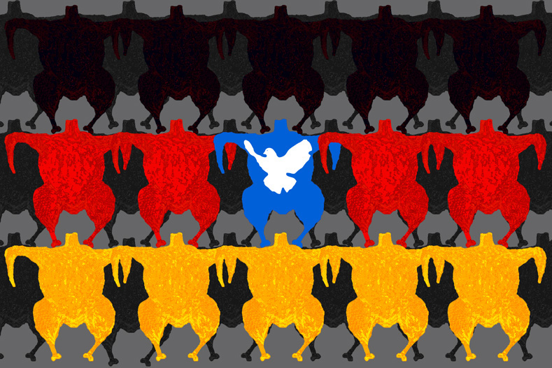

Kategorie: Die Ernährungswirtschaft in Mecklenburg-Vorpommern - "Wertschöpfung" · 5 Beiträge (statisches Archiv)
weuffen10.07.2012, 11:41 Uhr
AMV steigt gern in den aktiven Dialog ein
Agrarmarketing Mecklenburg-Vorpommern e.V. (AMV) steigt gern in den aktiven Dialog zu allen Fragen rund um die Ernährungswirtschaft ein. Mit 100 Partnern sind wir das größte Netzwerk der Branche in Mecklenburg-Vorpommern. Unser Ziel ist es, den nachhaltigen Absatz von Produkten aus der Agrar- und Ernährungswirtschaft unseres Bundeslandes zu unterstützen, an der Erhöhung der Wertschöpfung im Land mitzuwirken, um zur Sicherung und zum Ausbau von Arbeitsplätzen in MV beizutragen. Das Tätigkeitsfeld umfasst viele Aufgabenbereiche: Sie reichen von Fachmessebeteiligungen (BioFach in Nürnberg, Anuga in Köln, Intermessen in Düsseldorf, BioMesse in Berlin, BioNord in Hannover, PLMA in Amsterdam) über Kooperationen mit dem Handel, Branchentage und Seminarveranstaltungen für die Branche bis zu PR- und Lobbbyarbeit. Unter der geschützten Marke "Hanseland" bieten wir ansprechende Präsente an.
Stärkere Aufmerksamkeit legen wir seit einigen Jahren auf die bessere Vernetzung mit der Tourismus- und Gesundheitswirtschaft. Hier gibt es Reserven, die wir unbedingt nutzen sollten.
Aufgrund der relativ geringen Exportquote der Branche sehen wir als besonders wichtige Aufgabe die Nutzung und den Ausbau der Chancen im Export. Das ist ein Thema, dem wir uns künftig gerne stärker als bisher stellen möchten und wofür wir die Unterstützung des Landes dringend brauchen.
Wir identifizieren uns vollkommen mit den "Schlaglichtern" auf dieser Homepage. Sie widerspiegeln in Kurzform die aktuelle Situation der Branche. Besonders dem Thema der Verbraucheraufklärung werden wir uns in den kommenden Jahren widmen.
Mehr zum AMV unter <!-- w --><a class="postlink" href="http://www.mv-ernaehrung.de">www.mv-ernaehrung.de</a><!-- w -->
einwohner10.07.2012, 18:43 Uhr
Re: AMV steigt gern in den aktiven Dialog ein
Es wird schwer werden, als AMV den aktiven Dialog gerne zu führen. Dafür gibt es einen simplen Grund. AMV ist Interessensvertreter seiner Mitglieder.
Natürlich macht Agrarmarketing vor allem dort Sinn, wo der Verbraucher sich ohne die Werbung anderweitig orientieren könnte.
Und da wären wir auch schon bei der modernen Schweinehaltung und Fleischerzeugung. Die braucht dringend ein besseres Image, erkannte sogar der Deutsche Bauernverband.
Dessen DBV-Präsidium hatte 2011 einstimmig eine schlagkräftige "Branchenkommunikation Schweinefleisch" verabschiedet.
Durch eine Abgabe von 20 Cent pro Schwein sollten so mindestens 8 Millionen Euro im Jahr für Imagemaßnahmen zur Verfügung stehen. Daraus ist nichts geworden.
Zwei Jahre vorher war die deutsche Agrarmarketing-Organisation CMA mit einem Budget von 100 Mill. Euro wegen verfassungswidriger Zwangsbeiträge liquidiert worden.
Derzeit wird die Basispressearbeit mit ca. einer halben Million Euro vom 2010 gegründeten „Wir erzeugen Fleisch e.V.“ finanziert. (Gründungsmitglieder: Bauernverband DBV, Fleischwirtschaft VdF u. Schweinehalter ISN).
In diesem Sinne ist es konsequent, dass auf der Startseite dieser Internetpräsenz über dem "besseren Verständnis von Produzenten und Verbrauchern füreinander" das Kotlett präsentiert wird.
Aber immer mehr der bekanntesten Printmedien berichten ausführlich und positiv über Vegetarismus. <!-- m --><a class="postlink" href="http://www.yoga-vidya.de/de/service/blog/medien-uber-vegetarismus-fleischindustrie-panik/">http://www.yoga-vidya.de/de/service/blo ... rie-panik/</a><!-- m --> Warum wohl?
Vielleicht weil die Hintergründe des Fleischkonsums für immer mehr Menschen nicht zu verantworten sind? Doch wo ist das Gemüse in MV? [Anhang: <!-- ia0 -->broilerdemo.jpg<!-- ia0 -->]
Die Sonnenblume auf der Startseite symbolisiert hier Bioenergie aber das handliche Ferkel wird keine Sonne sehen, anders als die netten Freilandrinder, die zur Werbung besser geeignet sind.
Ich hoffe, dass meine Anmerkungen dazu beitragen, hier einen wirklich aktiven Dialog zu führen, der neue Perspektiven eröffnet.

broilerdemo.jpg
weuffen11.07.2012, 09:57 Uhr
Re: AMV steigt gern in den aktiven Dialog ein
Natürlich sind wir der Interessensvertreter der Branche. Zur Branche gehören aber sowohl Kleinstunternehmen als auch klein- und mittelständische Unternehmen sowie große Unternehmen. Da ist es unwahrscheinlich, dass alle Unternehmen die gleiche Meinung zu einer Fragestellung haben.
Die Problematik der Verbraucheraufklärung ist so vielschichtig und vielfältig, dass nur durch permanente Aufklärung und Präsenz Aufmerksamkeit geschaffen werden kann. Angaben der Lebensmittel Zeitung (LZ) zufolge haben 66% der Verbraucher wegen negativer Berichte über Lebensmittel schon einmal ihre Einkaufsgewohnheiten geändert. Das ist sehr bedenklich.
Wer schon einmal eine Lebensmittelproduktion von innen gesehen und sich mit den Auflagen und Vorschriften an diese Unternehmen beschäftigt hat, besitzt ein Grundwissen und soviel Menschenverstand, dass er nicht einfach drauf schlägt und die gesamte Branche verunglimpft.
Und dann haben wir das Thema des Wegwerfens von Lebensmitteln. Lt. LZ beteiligt sich jeder Bundesbürger jährlich durchschnittlich mit 82 kg daran. Er könnte genauso gut 235 € verbrennen, das wären dann 21,6 Mrd. € - ein sehr anschaulicher Vergleich der LZ. Hier ist dringend Aufklärung u.a. dazu notwendig, welchen Hintergrund ein Mindesthaltbarkeitsdatum hat. Früher haben wir unsere Sinne wie riechen, sehen und schmecken eingesetzt und sind gut dabei gefahren.
Dann haben wir noch den gesundheitlichen Aspekt bei der Ernährung. Es sollte Ziel der Aufklärung sein zu verdeutlichen, dass aus ernährungsphysiologischen Gründen nicht jeden Tag Fleisch gegessen werden soll. Wie überall macht es nur die richtige Mischung aus Fleisch, Fisch und Vegetarischem. Erst wenn der Mensch für sich selbst begreift, dass er mit seiner Ernährung seiner Gesundheit schadet, ist die Basis dafür gelegt, dass er eventuell über eine Ernährungsumstellung nachdenkt. Das ist ein weiter Weg. MV hat hier großen Nachholbedarf, besonders was die Zahl der adipösen Kinder betrifft, die von jüngstem Alter an bestimmte Ernährungsgewohnheiten anerzogen bekommen.
Es gibt viele Tätigkeitsfelder, die nicht allein von der Wirtschaft getragen werden können. MV als modernes Agrarland mit einer leistungsstarken Ernährungswirtschaft ist bei der Verbraucheraufklärung von Landesseite gefordert.
einwohner11.07.2012, 10:50 Uhr
Re: AMV steigt gern in den aktiven Dialog ein
Sie werden mir sicher zustimmen, dass große Unternehmen einen etwas größeren Betrag zur Bewerbung ihrer Produkte einsetzen können als ein Kleinstunternehmen.
Vor diesem Hintergrund habe ich versucht, eine gewisse Ausrichtung in Ihrer Interessenvertretung zu problematisieren. Auch werden Sie als Marketingexperte nicht abstreiten können, dass die Startseite dieser wunderbaren mensch-und-land-site von der Präsenz bestimmter Interessensvertreter ihrer Branche dominiert wird.
Warum Sie daraus schlussfolgern, dass hier jemand "einfach drauf schlägt und die gesamte Branche verunglimpft", bleibt mir schleierhaft.
Einen aktiven Dialog habe ich mir etwas anders vorgestellt.
weuffen16.07.2012, 12:18 Uhr
Re: AMV steigt gern in den aktiven Dialog ein
Es macht keinen Sinn, dass wir uns weiter auf diesem Wege unterhalten. Es gibt so viel, was zu sagen wäre. Der jetzige Kommunikationsweg ist aus meiner Sicht ein Einstieg, für tiefgründigere Diskussionen allerdings nicht optimal. Ich schlage Ihnen vor, dass wir uns zu einem Gespräch verabreden. Sie kennen meine Kontaktdaten, ich Ihre leider nicht. Es liegt also in Ihrer Hand, ob wir uns weiter austauschen.